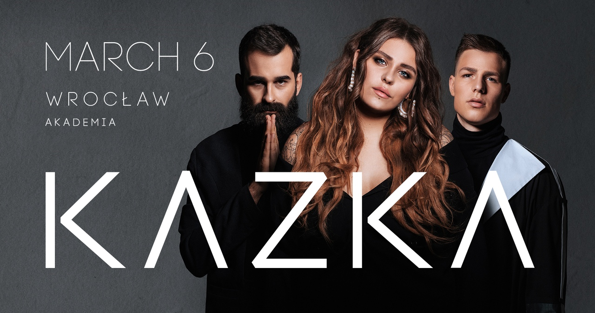
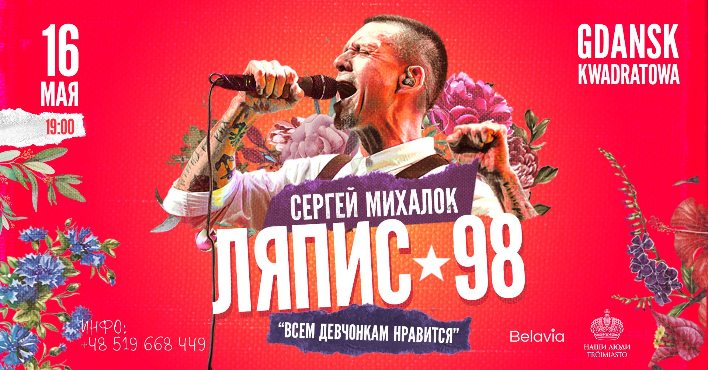

UPCOMING CONCERT: KAZKA
MARCH 7, 2019
Kazka (stylized as KAZKA; Ukrainian for fairytale) is a Ukrainian musical trio from Kyiv. The band was formed in 2017 by lead vocalist Oleksandra Zaritska along with members Mykyta Budash and Dmytro Mazuriak, who joined in 2018. The song “Plakala” (Cried) is the first Ukrainian song that has made it into the Shazam Top 10 world chart.
UPCOMING CONCERT: LYAPIS 98
MAY 16, 2019
Lyapis 98 is a Belarusian rock band. It was named after comical hero from Ilya Ilf's and Yevgeny Petrov's novel "The Twelve Chairs", poet and potboiler Nikifor Lyapis, who used pseudonym Trubetskoy. Received various awards from RAMP, «Рок-коронация», «Чартова дюжина», «Степной волк», ZD Awards, Ultra-Music Awards.